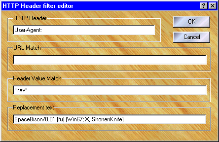

Here is where you change HTTP header filters or create new ones. Click on an area below to get an explanation of its function.

Unlike web page filters, the header filter's name is very important. It's simply the name of the header you want filtered and, except for case, it must match exactly (sorry no wildcards here). A comment can be added after the colon ":" which will be ignored during filter matching.
The matching clause and replacement text work similar to the web page filter editor but match on the header's contents only (not the header's name).
A header filter can basically do one of three things: delete an existing header, modify an existing header, or add a new header.
- To change a header: both the matching expression and replacement text must have something in them. Just use "*" in the matching clause to match all headers of that type.
- To delete a header: include a matching expression, but leave the replacement text blank.
- To always add a header: include a replacement text, but leave the matching expression blank.
- To add a header only if it doesn't exist: include a replacement text, but use "(^?)" in the match. Looks odd? Well, it is! Since (^...) means NOT and ? means ANY character, (^?) translates into "not any character"!
Testing a match
To test a filter's matching clause or URL match right-click over either the matching edit box or the URL edit box and select "Test matching" from the pop-up menu. This will take you to Proxomitron's Matching Test Window where you can check to see what your filter will do. Just enter the contents of the header you wish to test in the window (enter only the stuff that appears after the "Header-Name:" bit, do not include the actual header name itself).
The URL: header
Sometimes you may want to change a web page's URL itself. Although not really a header, Proxomitron will treat the name "URL:" as a special URL header filter. In this case the match will be the full URL (including the http:// part that the normal URL match ignores).
In the replacement text you'll probably want to use one of the redirect matching commands. There are two $JUMP(someurl) and $RDIR(someurl). Both will redirect the connection to a new (possibly different) URL.
$JUMP( ) works by sending a redirect back to your browser and letting it do the work. This is handy because it browser will know it's got a new URL and display it correctly in the location bar.
$RDIR( ) Is more sneaky and redirects the connection in Proxomitron without telling your browser. This is useful when you want your browser to think it going one place when, in reality, it's going somewhere else.
Here's an example of using the URL: header to redirect a URL. This filter will convert a hostname like "some-site" to "www.some-site.com". It just adds "www." and ".com" to any hostname without any periods (note: this filter would be enabled under the "out" column).
HTTP Header = URL: Dot-Communize dotless hostnames (out)
Match = http://([^./]+)\1/\2
Replace = $JUMP(http://www.\1.com/\2)
Here's the important features of this filter...
- The header name begins with "URL: ...." This tells it we want to filter the URL itself.
- The match checks for a hostname that lacks any dots or slashes ([^./]) and captures this into variable "\1". Variable "\2" then captures the rest of the path. (see the Matching Rules for all the gory details).
- Finally, in the replace, we take the parts of the original URL we captured and use them to cobble together a new URL for the $JUMP(...) command.
Killing connections and rejecting selected URLs
A new option in the replacement text, "\k", allows you to kill any connection before it is loaded. When used with the URL match, you can create a "ban list" of URLs never to accept. Look at the "URL-Killer:" HTTP filter in the default filter set for an example of this.
MIME encode/decode and password strings
Right-clicking over the replacement text window will reveal an option to MIME encode/decode an selected text. This can be used to create password entries to automatically log you into sites or proxy servers that require a password. For web sites use the following header filter...
Name= Authorization:
URL= The site you wish to send the password to
Replace= basic username:password
Next select the username:password portion and select MIME > encode from the context menu. The end result should look something like this...
basic dXNlcm5hbWU6cGFzc3dvcmQ=
When enabled, this rule will send your password string to the server automatically and you will not be prompted for a login. Note: this only works for sites using the "basic" HTTP authentication scheme. You can use the decode option if you need to see or change your password at a later date.
Creating a proxy server password is much the same - just change the header name to...
Name = Proxy-Authorization:
and remove any URL match (since the proxy server will be used for all URLs)
 Return to main index
Return to main index